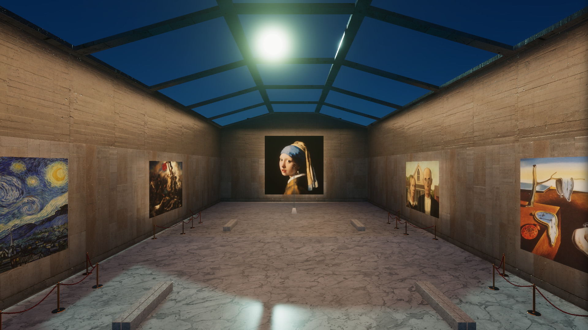
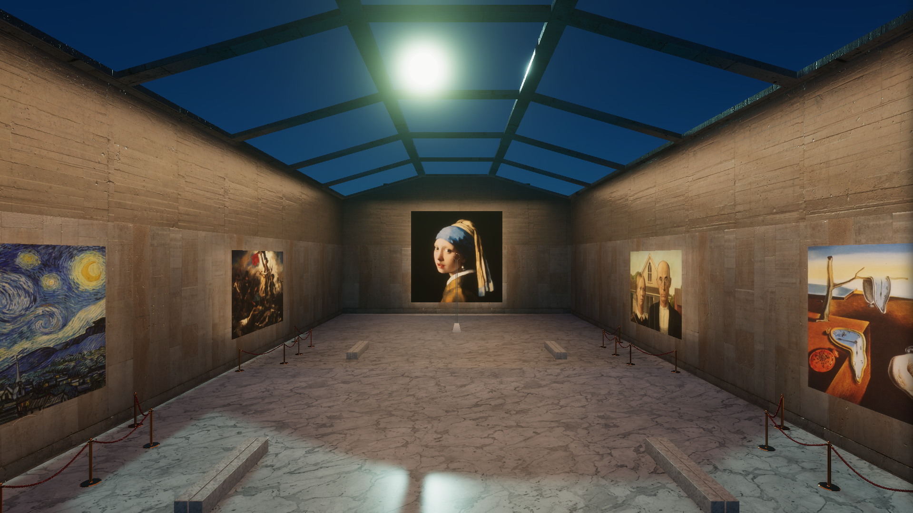

Liminal Museum
Jeu d'exploration non-euclidien
Le peintre Jakob Kamiński est un artiste tourmenté. Persuadé de seulement copier d'autres artistes sans jamais innover, il nous emmène dans un étrange voyage au coeur de ses doutes.
Ce projet s'inscrit dans un exercice à thème. La contrainte était de se conformer à cette idée : "Sortir du cadre". Pris littéralement, j'ai voulu faire en sorte d'explorer un musée non-euclidien où le coeur de l'aventure consiste à entrer dans les cadres d'oeuvres iconiques.

Anamorphoses
Afin de pouvoir entrer dans une peinture pour en dévoiler son contenu caché, il faut déclancher sa transformation. Cette transformation va offrir - à la peinture - de la profondeur par anamorphose.
Une anamorphose est une image déformé qui se reforme uniquement en l'observant par un point précis dans l'espace.
Aperçus
 


Résultat